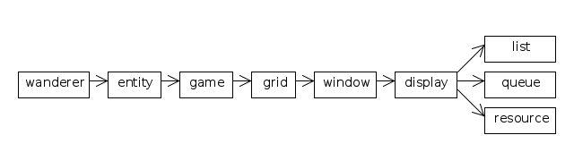

The C version provided the greatest number of challenges to clean, robust development. Here are some of them.
The overall structure of the modules, as a UML class diagram, is:

Some effort was put into avoiding circular dependencies, so each module depends only on the ones to its right, allowing fairly straightforward development of the modules from right to left.
Each module has a header file and a code file, except for the main program wanderer.c which doesn't need a header because it isn't used by any other module. Conditional compilation is used in every header file to prevent trouble from double inclusion. For example:
list.h #ifndef LIST_INCLUDED #define LIST_INCLUDED ... #endif
Roughly speaking, each module defines a type, published as an opaque structure, e.g.
list.h ... typedef struct list *List; ...
The typedef defines the type List as a synonym for
struct list * which avoids struct and pointer notation when
mentioning the type. It also implicitly includes the statement struct
list; which declares the structure without a body. This prevents
accidental or malicious access to the fields of the structure from outside its
own module. It forces normal code to access the structure using only the
facilities provided by the module, which in turn allows the module to provide
bullet-proof guarantees, promoting robust program development. These "structure
prototypes" (known as incomplete types in the C standard) seem just as
fundamental as function prototypes, which makes it surprising that they are not
more widely understood and used.
To compile the program, a script compile.sh is used on Linux, and compile.bat on Windows. These are simple one-liners which compile all the .c files in the development directory. (Using make or ant really isn't worth it.) For example:
compile.sh gcc -std=c99 -pedantic -Wall *.c -lSDL -lSDL_ttf -o wanderer
The -std=c99 and -pedantic flags are essential to ensure that only standard C is used. The -Wall flag wasn't used during early development, but when it was added and the warnings dealt with, a difficult bug immediately disappeared, so it is definitely worth using. No optimizing flag was used during development, to keep compilation fast, but -O3 or similar should be added for production compiling of programs where efficiency matters.
Conditional compilation in the main program wanderer.c was used throughout development to control unit testing. A definition at the top decides which module is currently being developed:
wanderer.c // Define RUN or TEST_RESOURCE/LIST/QUEUE/DISPLAY/WINDOW/GRID/GAME/ENTITY #define TEST_ENTITY ...
Modules which are not currently compilable can be temporarily moved out of
the development directory, without preventing compilation of the rest. Defining
RUN allows the full final program to be compiled. Towards the end
of development, frequent switching between RUN and
TEST_ENTITY was avoided by using the -t command line
flag, instead of changing the #define, to do testing.
Only two debugging techniques were used during development. One is the
standard approach of adding printf statements to monitor the
progress of the code and the values of key variables.
The other was commenting out sections of code. To make this easier, most
comments use // because /*...*/ comments don't nest.
This was particularly helpful at one point when there was a name clash. A
function had been defined (kill) which clashed with one in the
standard platform libraries. This stopped the program working properly even
though there were no calls to the function in the code, which meant that the
printf approach was useless. Once it was realised that commenting
out a large section of unused code solved the problem, that section was narrowed
down until the culprit function was found.
Arguably, some convention should be used to make function names safer, e.g. starting with a capital letter or a module prefix, but it makes programs more verbose and less readable.
The list and queue modules are reusable generic modules. There is a choice
between array list and linked list implementations. In terms of the API, an
array list allows cheap indexing, whereas a linked list allows cheap insertion
and deletion of items in the middle. (If you want to do both, a gap buffer is
probably your best bet.) In terms of efficiency, experience in languages other
than C suggests that the array approach wins in most circumstances. This isn't
quite so clear in C, because memory management using malloc etc.,
which you need for resizing the array, is expensive, but the array approach was
chosen anyway.
With an array list, it is conventional to start with a very small size (in case a program wants lots of very small lists), and to multiply the size by a factor of 2, or perhaps 1.5, when the space runs out, to reduce the cost of reallocating and copying (in case a program wants a few very large lists). With a multiplication factor, the overall cost of reallocating and copying is linear in the length of the list.
The queue module uses the well-known circular buffer data structure, as described in wikipedia, together with resizing to avoid a limit on queue size.
The fact that lists and queues are generic means that they aren't entirely type-safe. They accept pointers of any kind, losing the type information, and those pointers are then automatically converted when they are extracted. Better type safety can only be obtained in C using dirty tricks which aren't worth it. However, lists and queues are used only in well-controlled circumstances in the wanderer program, so there isn't much of a problem.
This module is mostly to help with delivery. Of the different possibilities
for releasing a C program, none of which are very attractive, the least bad
seems to be to use argv[0] to find the installation directory.
Then we need not bother with an installer, and just get users to put the
directory anywhere they like and run the executable.
A function findInstall is provided, which must be called when
the program starts up (even if just doing unit testing). This is
passed argv[0] and uses it to find the path separator character,
the current directory from which the program is being run, and the installation
directory. The code is written to cope with the common cases on Linux and
Windows platforms. Other platforms, e.g. older versions of MacOS which use
colon as a separator, would need more code and testing.
After that, calls can be made to find resource files such as images, fonts and levels, or recording and playback files mentioned on the command line which may be relative to the current directory.
The display module uses the SDL library to provide a graphical display on screen. The main part of the display is a 2D array of sprites, i.e. icon images, loaded up from image files and cached in memory. There is also a status line of text along the bottom, and a row of menu buttons along the top. Functions are provided to draw buttons, in pressed and unpressed versions, and to check whether a given (x,y) position on the screen is inside a button rectangle.
The window module is the only other module to use the SDL library. It deals with events, and with the timings needed to handle animation. This was pulled out as a separate module because the display module was already quite big, and because event and timing issues are complex, with their own difficulties.
The immediate mode approach was taken to GUI programming, i.e. avoiding the use of a separate thread to keep the user interface responsive. There are various web sites which describe the approach, e.g. the IMGUI tutorial. Although the tutorial is useful, it makes some issues seem unnecessarily difficult.
Two particular program features are tackled by the window module. One is that the program is alternately event-driven and animation-driven. It waits for the user to press something, and then responds by showing an animation of the triggered events as they happen. The second is that the speed of animation can be changed, including pushing the speed of animation right down to, say, one frame per second. This is a feature that was originally added for development purposes, but which seemed attractive enough to keep in the final product.
Both of these features lead to the same problem in an immediate mode setting, which is how to keep the buttons responsive. When the user presses a button, even if the associated action does not happen immediately, the user expects the button to change appearance, giving feedback that it has been pressed. Even a delay of, say, a tenth of a second in feedback from the button makes it feel as if there is something wrong. So the question is how to keep the buttons responsive when an animation is running, and in particular when a single long one-second frame is being processed.
The approach taken in the window module is to pre-process 'physical' events to form 'logical' events, and to do it continually, even during a single frame of animation.
The only features which the SDL library provides to handle timings are to
find the number of ticks since the start of the program, and to delay for a
given number of ticks. Even the SDL_WaitEvent call is implemented
internally as a loop containing a brief delay and a check to see whether any
events have happened in the meantime. Calling SDL_Delay
frequently is important, to allow other programs to run. It is important to
avoid busy waiting
which uses up all the computer's processing power, and so is unfriendly to
other programs, and isn't very green either.
All the facilities in the window module are implemented by making frequent
short delays, and calling processEvents, which takes physical
events off SDL's queue, stores them in its own logical event queue, and ensures
that feedback is displayed for each event as appropriate.
In addition to making the buttons responsive, sometimes it is important that the actions they represent should also be responsive. For example, while playing back a recorded game with slow animation, it is reasonable that any move the user makes should be delayed until all the recorded moves have been played back. However, the quit and speed change buttons should still be active. So the quit and speed change operations are executed immediately by the window module rather then being queued up.
The idea behind the grid module is that it should hold as much of the current state of the game as is necessary to drive the graphics, hiding the details of the display and window modules from the rest of the program.
The main part of the grid module is a 2D array of entities. To begin with, it seemed inevitable that the grid module and the entity module would depend on each other. The grid seems to need to know about the entities that are stored in it, and the entities seem to need to know about the grid they are stored in. But a single giant module was out of the question, because the behaviour of entities would need a lot of complex code, and the more issues that were separated out the better.
To keep all coordinate calculations inside the grid module, one possible design idea was to include in the grid module a map from entities to positions. However, making a map with pointers as keys requires a hash table approach or similar, which seems like overkill. Alternatively, an entity could contain a unique id, which would make the map much easier, but then the grid module would need to know something about the structure of entities anyway, and so might as well define the entity structure with coordinate fields.
Defining the entity structure and primitive operations on it inside the grid module allowed a different problem to be solved. By making one of the primitive operations a move operation, the target entity could be re-used to leave a space behind where the moving entity came from, keeping the memory usage for objects very tight.
As a way of carving off another sub-problem from the potentially over-complex entity module, a separate game module was invented. The game type holds all the global information shared by all the entities, e.g. the score, the number of moves made, and so on.
The entity module, which remains rather complex, defines the behaviour of all the different types of entity.